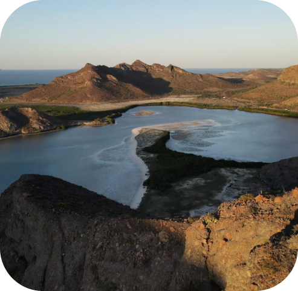

Nuestra Historia
Somos un grupo de mujeres de diferentes partes del mundo y con distintas profesiones: fotógrafas, biólogas, comunicadoras, abogadas, guías y más. Un día, compartiendo nuestras anécdotas marinas, nos dimos cuenta de que en medio de tanta diversidad teníamos una pasión en común: trabajar por la conservación y protección de los mares y sus costas.
Decidimos unirnos y crear ORGCAS para construir perspectivas de cuidado que nos den océanos más saludables y nos ayuden a restaurar nuestra relación con la naturaleza.
Queremos compartir con otras personas el amor que sentimos por el mar y así crear colectivamente un estilo de vida que nos dé herramientas para salvaguardar la biodiversidad tanto aquí como en otros lugares del planeta.
¿Dónde trabajamos?
Baja California Sur, México, es donde habitamos y sin duda nuestra gran fuente de inspiración. Este lugar tiene una importancia biológica y ecosistémica por la abundancia de vida que coexiste: Aquí llega desde el animal más grande del mundo como la ballena azul, hasta millones de organismos invisibles en el agua que alimentan a muchas otras especies. La magia de este paisaje es única y nos recuerda cada día que una sana coexistencia es posible.
¿Alguna vez has visto un delfín en su hábitat natural? ¿Has nadado con miles de peces? ¿Has visto a una ballena saltar desde una panga?
Cuando esto sucede hay un pálpito que se despierta por dentro: el latido de la vida recordándonos su fuerza.
Las Orgcas...
Nació en Ciudad de México, creció rodeada de la riqueza natural de su país, ella dice que nació y creció en conservación, siendo este el legado de su familia. Estudió Arte y Diseño en Londres, y una licenciatura en Fotografía. Mientras pasaba su tiempo en campo como fotógrafa, se dio cuenta de la necesidad y la oportunidad de trabajar para la conservación con las comunidades a través de la comunicación. Junto con otras mujeres del equipo tuvo la visión de crear ORGCAS conectando todas las ideas para materializarlas. Siempre le apasionó la fotografía de naturaleza, es soñadora y trabajadora. A Porfi le encantan los ctenóforos.
Nació en Guadalajara y ha estado obsesionada con el agua desde antes de hablar. Estudió comunicación y se especializa en la construcción de equipos, procesos de flujo de trabajo y logística. Después de hacer su primer curso de buceo en 2017, supo que tenía que ser parte de la preservación de todas las maravillas que encontró debajo de la superficie. Por eso hace unos años decidió mudarse a La Paz, BCS. Es organizada, conciliadora, determinada y le encanta trabajar en equipo. A Ele siente una conexión con los peces cuando van en cardumen.
Nació en Ciudad de México y creció con una relación cercana al mar y a la naturaleza en general, influenciada por su familia de exploradores ambientalistas. Abogada de carrera. Desde los 18 años empezó a trabajar en temas ambientales en Beta Diversidad, organización dedicada a la conservación de ecosistemas marinos y terrestres. Ha publicado artículos en algunos medios, entre ellos la revista Equilibrio. Todo su trabajo se enfoca en hacer esfuerzos y alianzas para la conservación de la naturaleza. Le encanta escalar, subir volcanes y hacer caminatas. Es metódica y tiene el don de ser una excelente mediadora. A Gaby le fascinan las ballenas azules, las jorobadas y los cachalotes.
Nació en Ciudad de México pero creció cerca del campo y en contacto constante con la naturaleza. Estudió Relaciones Internacionales y después de trabajar en una organización sin fines de lucro dedicada a la conservación y desarrollo comunitario, entró a un máster en Gestión Ambiental y Auditoría de Empresa. También estudió un segundo máster en Gestión Sostenible. Su interés en contribuir a la conservación la llevó a trabajar en el sector público en el área de finanzas de carbono. También participó en proyectos de desarrollo comunitario en varias regiones del país, para promover soluciones e impactos positivos a largo plazo. Aunque viva en la ciudad, siempre busca la manera de ir al mar a snorkelear o bucear. Es emprendedora y dirige su empresa. A Sofi le encantan las tortugas.
Nació en Xalapa, Veracruz y desde niña se acuerda de estar en el mar. Ya le ha alcanzado la vida para estudiar Biología marina, hacer un máster en Ecología Marina por el Instituto Queen Mary de Londres y un doctorado en Ciencias Marinas en el CICIMAR - La Paz. Además es guía de buceo certificada y miembro de Migramar, una red de investigación especializada en especies migratorias del Pacífico oeste tropical. En su trabajo siempre ha tenido un interés especial en temáticas relacionadas con migraciones y conectividad de tiburones y cómo esta información puede ser utilizada en políticas públicas. Es muy apasionada, positiva y tiene la capacidad de participar en muchos proyectos al mismo tiempo. A Frida le apasionan los tiburones desde que tiene memoria.
Nació en Colombia, donde cultivó su espíritu aventurero, viajando y descubriendo lugares en la naturaleza. Estudió comunicación con estudios complementarios en antropología, trabajó en varias producciones de eventos culturales y proyectos sociales. Hace 3 años llegó a México con el propósito de aprender acerca del mar y certificarse como guía. Es curiosa, le motiva siempre estar aprendiendo y descubriendo. A Mariana le emocionan los delfines comunes.
Nació en Como, Italia, y viajar siempre fue su amor más grande. Estudió Gestión Empresarial por la Universidad de Greenwich y se especializó en Gestión de Riesgos por la misma universidad. Ha vivido lugares remotos, explorado selvas y ha tenido todo tipo de aventuras. Hace cinco años recibió una oferta de trabajo en un centro de buceo en el Caribe mexicano y desde entonces, todas sus decisiones se han centrado en lograr vivir una vida sostenible junto al océano. Es carismática y tiene un espíritu aventurero indiscutible. Marti siente una conexión especial con las ballenas jorobadas.
Nació en Tepatitlán de Morelos, Jalisco, cada paso de su vida lo ha dado para estar cerquita de la naturaleza. Estudió biología en la Universidad Autónoma de Guadalajara, se especializó en gestión de ambientes costeros por el CICIMAR y actualmente está formándose en ciencias sociales. Le hace muy feliz explorar bosques y selvas. Está convencida de que la transformación comienza entendiendo a las personas en su relación con el mar y la tierra. Es sensible, consciente y entregada al aprendizaje. Sofi ama a los tiburones martillo.
Nació en Colima y ama el mar por encima de todo. Es una apasionada de la Biología Marina, actualmente está formándose en esa carrera. Se dedica a la ciencia, a la fotografía terrestre y subacuática, al buceo, a la apnea y también al yoga como instructora. Está totalmente convencida de que en el mundo todavía hay soluciones para preservar los ecosistemas marinos. Su alegría y positivismo la definen. Lissa siente una conexión única con las mantas.
Nació en Ciudad de México, pero creció cerca al Océano Pacífico. Es psicóloga e instructora de buceo. Pero en 2018 compró su primera cámara y desde entonces ejerce su pasión de ser videógrafa de vida marina. Ha colaborado con grandes compañías de documentales de naturaleza. Es la mejor piloto de dron y de avionetas. Es soñadora, leal, y su sentir y filosofía está plasmado en su trabajo. Maru dice que su animal espiritual es la ballena jorobada.
Nació en España, la primera vez que se puso un equipo de snorkel tenía 3 años y desde entonces no ha salido del agua. Es oceanógrafa graduada en la Universidad de Las Palmas de Gran Canaria con una licenciatura en Ciencias del Mar. Se mudó a México para cursar un Máster en Manejo de Recursos marinos. Viaja alrededor del mundo con muchísima gente que la acompañan en sus inmersiones, todo el tiempo trata de compartir su amor por el mar y concientizar que los recursos que nos ofrece son limitados. Es aventurera y divertida. A Gador le apasionan todos los tiburones.